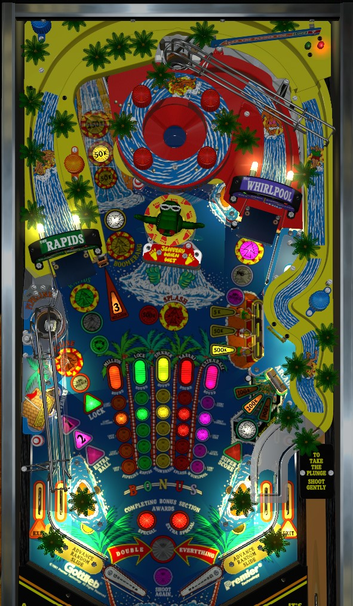

The most efficient points in Surf 'n Safari are in multiball. Light lock at the left saucer by making 5 shots to the left ramp or 3 shots to each of the five colours. During multiball, shoot 2 lit shots to light a 5,000,000 jackpot on the left ramp, then 5 lit shots to light a 30,000,000 super jackpot on the left ramp, then repeat. Other valuable sources of scoring include Three Million mode from 5 left scoop shots and repeatedly shooting the Whirlpool right ramp for 3,000,000-4,000,000 per shot.
The skill shot is a precise power plunge to a hidden saucer in the back of the game. If you miss the skill shot, the game will tell you if you shot too hard or too softly. This saucer is always available, and very rarely, the pop bumpers can send the ball up here too during regular gameplay. There are a ton of awards this can give:
If you miss the skill shot too softly and must plunge the ball again, making the skill shot on a second time will always award Absolutely Nothing.
If you make the skill shot immediately after locking a ball at the left scoop, your prize will be a 3rd ball during the ensuing multiball instead of a mystery award.
A tournament-specific install for the game code ensures that all players receive the same skill shot of 500,000 points.
Hitting one of the 5 major Slide shots- the left Pipeline scoop, the left Rapids ramp, the Boomerang spinner lane left of the bumpers, a completion of the Splash center drop targets, or the Whirlpool right ramp- starts a Column mode as long as no multiball or other row/column mode is running. The mode timers mentioned below are displayed within the 5x5 grid of lights that makes up the feature grid.
Lighting entire rows of the feature grid (bottom-up) by shooting each of the 5 Slides a certain number of times starts other modes alongside Vertical modes.
Each completed grid is worth 5,000,000 points in end of ball bonus. If you complete the entire grid more than once in a game, you receive a Special for subsequent completions. If you complete the entire grid more than once in a single ball, the completions after the first will give you an Extra Special as well, which is literally just a second Special. New grids can be worked on as soon as old ones are completed (after all modes and multiballs have ended).
There are two ways to light lock: complete the green Rapids column at the left ramp, or complete the first three rows of the grid with shots around the playfield. Locks are always at the left Pipeline scoop. The column lock is on a hurry-up, starting at 5,000,000 points and counting down to 0. You must collect the lock before the hurry-up ends or the lock will be lost, and locking the ball scores the currently remaining hurry-up value. The three-row lock stays lit until collected or until the end of the ball, but does not come with a unique scoring opportunity.
After locking a ball, a second ball is sent to the shooter lane. If you make the skill shot with this second ball, you will be given a third ball for 3-ball multiball. If you fail the skill shot with the second ball, you only get 2 ball multiball. There is absolutely no ball save or multiball restart in this game.
When multiball starts, two shots are lit out of the Pipeline scoop, Rapids ramp, Boomerang lane, Whirlpool ramp, and Arcade lower right target. Make these two shots and the Rapids ramp will be lit for a 5,000,000 point jackpot. Once jackpot is collected, all 5 of the listed shots will be lit, and making all 5 lights the left ramp for a 30,000,000 points super jackpot. When a super jackpot is collected, all 5 shots relight, and the super jackpot phase repeats. Repeatedly making super jackpots is the most efficient way to score in the game, but as always, any ball coming out of the bumpers (on multiball start or after a Boomerang or Whirlpool shot) is very dangerous.
Immediately after multiball ends, the Rapids ramp will be flashing for 15 seconds. If you make the ramp during this time, the Whirlpool ramp will then flash for 15 seconds. Hitting the Whirlpool when flashing will give you 1,000,000 points per Whirlpool spin for one shot only. If you are able to nudge the ball to keep it in the Whirlpool longer, now would be the time to do that.
Pipeline: for about 20 seconds after completing the column for the left Pipeline scoop, the scoop will be lit for Advance Double. Shots to the scoop during this time award letters in the word Double. Complete the word Double to start Double Everything as described later in the guide.
Rapids: whenever the Rapids is complete but no other mode or multiball is running, you can shoot the ramp to start a Go for the Record combo. Your goal here is to shoot the ramp as many times consecutively as you can. If you break the machine's record for longest combo, you will be able to put your initials in as the record holder at the end of the game, and one further shot to the ramp will score a special. Hitting any other switch besides the left ramp itself and the right in lane will break the combo, but you can start a new one immediately.
Boomerang: the spinner is constantly lit for 50,000 per spin once the yellow column has been completed.
Splash targets: clearing the bank is worth 500,000 points once the red column has been completed- ignore this.
Whirlpool: the Whirlpool value starts at 50,000 per spin at the start of each ball. Making a shot to the Whirlpool when nothing else is running, or earning the Swirl Whirlpool skill shot award, will increase the Whirlpool's per-spin value by 50,000 points, up to a maximum of 350,000/spin. A strong shot to the Whirlpool should be worth about 10-12 spins even without any nudging, so a maxed out Whirlpool can be worth around 4,000,000 per shot. Whirlpool shots during any mode or multiball always score 50,000 per spin. As one additional note with the Whirlpool, you must hit at least one switch within the Whilrpool itself to get credit for a shot to this ramp at any time during the game. A weak shot can fall out of the Whirlpool cup without hitting any of the switches within it, which means the Whirlpool ramp will not register for anything at all.
The word Double is a carryover award across players and games. Once the Pipeline column is complete, shoot the left scoop when lit (for a short time) to earn Double letters. The skill shot can give a single Double letter or all remaining Double letters. Additionally, one Double letter is added at the end of a game if no players earned any Double letters, unless doing so would finish spelling the word. When Double is completed, everything is doubled for the rest of that player's ball- this includes all scoring, any extra balls earned, any specials earned, and all shot progress. Shots to any waterslide will advance the grid by 2 levels instead of one (even if credit for a shot was spotted by the in lanes), and if you start a Go for the Record, each left ramp shot will count as 2 ramps instead of one. The double scoring even applies to the Whirlpool, the Super Score arcade target, and all multiball jackpots.
If the game is put in tournament mode, all players start with the letters DO in Double, and they do not carry over between players or games.
Score 5,000, then 50,000, then 500,000 points. Ignorable given how out of control the ball is after a shot here.
Surf 'n Safari has a conventional in/out lane setup. The out lanes are lit for Exit Score by completing the bottom row of the feature grid; Exit Score is a random award between 5,000 and 1,000,000 points. (On tournament code, the out lanes will always score 100,000 points.)
The in lanes can be lit for Advance Random Slide, which does just that. (If Double Everything is running, it will spot 2 of a single random slide.) The in lanes cannot finish a slide for you, and if all remaining slides would be completed with one more shot, the in lanes will not be lit. For the first grid, both in lanes are lit except for immediately after an in lane is registered, so that you can't spot two rides going up and down an in lane. All it takes is one switch hit anywhere else in the game to relight an in lane. Starting with the second grid, only one in lane can be lit at a time, alternating with slingshot or bumper hits. Lit in lanes are also disabled during the return feed from the Pipeline, Rapids, or skill shot, since those put the ball in the in lane for free.
Bonus is 10,000 points per light on the current feature grid, plus 5,000,000 points for each completed grid over the course of the game. The bonus cannot be multiplied, and is always carried from ball to ball since it looks back at waterslide progress over the whole game. Double Everything does not double that ball's bonus. There is no mid-ball bonus collect. Bonus is not meaningful until a grid is completed, so don't sweat a tilt before then, but don't leave the 5,000,000 points per completed grid on the table.